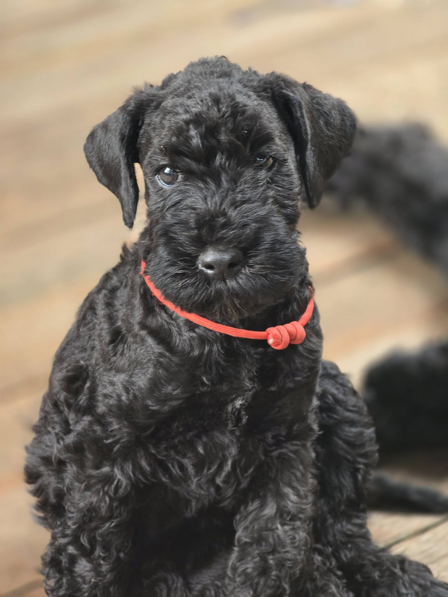
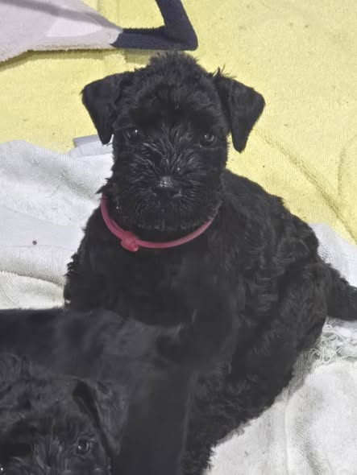
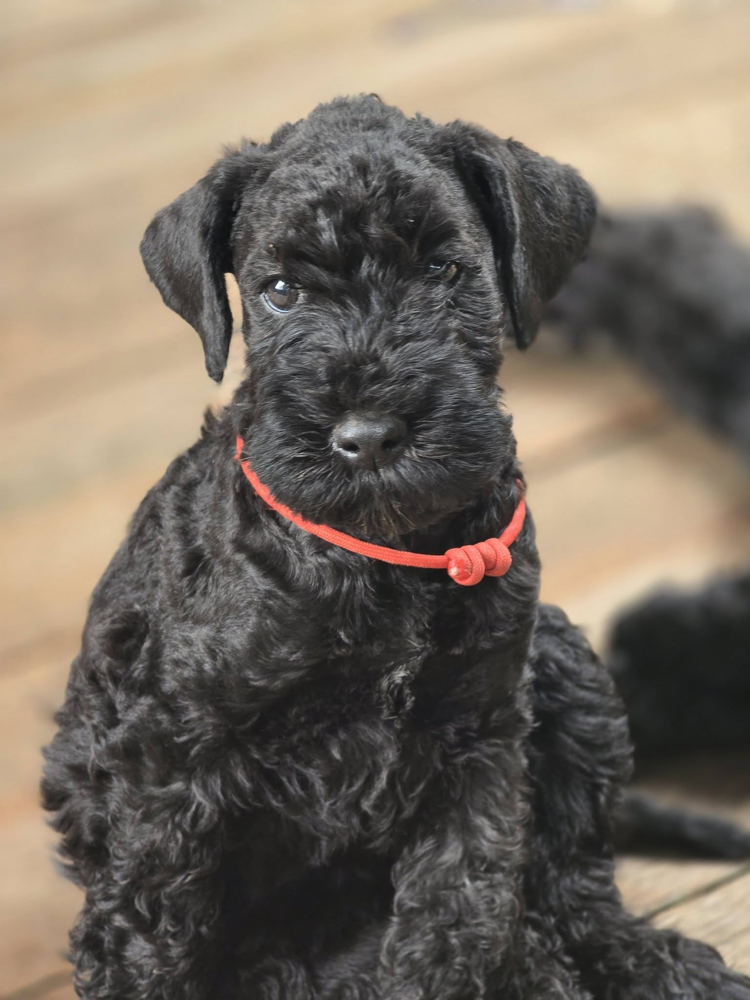
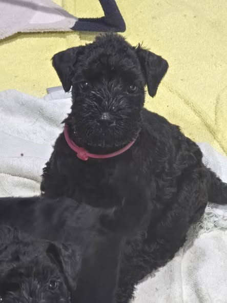

About us
LegeArtis Kerry Blue Terriers is a small, home-based kennel located in Auckland, New Zealand. Our dogs live as part of the family and are raised with a strong focus on temperament, adaptability, and everyday life skills.
Our priority is producing confident, people-oriented companions who fit well into modern households. We take a friendly, honest approach and are always happy to talk openly about whether a Kerry Blue Terrier is the right match for you.
We believe this breed is wonderful, but not suitable for every home, and careful placement is important to us.

About the Kerry Blue Terrier
Kerry Blue Terriers are bright, loyal, people-oriented dogs with a lovely sense of humour. They tend to do best with owners who enjoy training, structure, and regular grooming.
Temperament
- Confident, clever, and very devoted to their people
- Often enjoy having a “job” (training, activities, learning)
- Can be reserved with strangers at first — good socialisation matters
Exercise & training
- Daily walks + play and mental stimulation
- Respond well to positive training and routines
- Terrier traits: independence + curiosity
Grooming
- Regular brushing and combing
- Professional grooming every 6–8 weeks (typical)
- We can guide new owners on coat care
Planned litters / availability
Status: We currently have a litter. Please enquire to discuss suitability and placement.
Planned litters are announced in advance and we maintain a small waitlist.
 



We place puppies based on temperament and lifestyle fit rather than first-come, first-served. Our goal is to match each puppy with the home where it will thrive long-term.
- Puppies go to new homes from: 8+ weeks
- Raised with: a busy home environment and normal household sounds
- Included with puppies: first vaccination, microchipped, regularly de-wormed, puppy pack, and 4 weeks of introductory pet insurance
Health & welfare
The health and wellbeing of our dogs is central to everything we do. We’re happy to discuss the breed’s health considerations and what we do to support strong, stable family companions.
Parents
- DNA testing for Degenerative Myelopathy (DM)
- DNA testing for von Willebrand’s disease (vWD)
- Stable, family-friendly temperaments
- Health information discussed openly with prospective owners
Puppies
- First vaccination
- Microchipped
- Regularly de-wormed
- Puppy pack provided
- 4 weeks introductory pet insurance
- Early handling and socialisation
- Guidance for grooming, feeding, and training
All puppies are placed with a written agreement and ongoing support to ensure their long-term wellbeing.
Ongoing support
- Lifetime support for puppy owners
- Friendly advice whenever needed
Our process
- Friendly initial enquiry: Tell us about your household, lifestyle, and what you’re looking for in a companion.
- Conversation: We’ll chat about the breed and your expectations (including grooming and training needs).
- Waitlist: If it’s a good fit, we’ll discuss joining a small waitlist for planned litters.
- Puppy matching: Puppies are matched based on temperament and your home environment.
How to enquire
If you’re interested in a Kerry Blue Terrier companion, we’d love to hear from you. A few details in your first message helps us respond faster and makes the conversation easier.
Please include
- Your location (Auckland or elsewhere in NZ)
- Household details (kids, other pets)
- Typical work hours / time at home
- Experience with terriers or grooming (if any)
- What you want most in a dog (calm / active / social / etc.)
What happens next
- We reply with a few questions and some information about the breed
- If it looks like a good match, we’ll arrange a call
- Waitlist is discussed only when we’re both comfortable it’s the right fit
No pressure — we’re happy to answer questions even if you’re still deciding.
Contact
Email:
legeartis.kerry@yahoo.com
Facebook:
LegeArtis Kerry Blue Terriers
When getting in touch, please tell us a little about your household, previous dog experience, and what you are hoping for in a Kerry Blue Terrier. We enjoy getting to know potential owners and are always happy to answer questions.